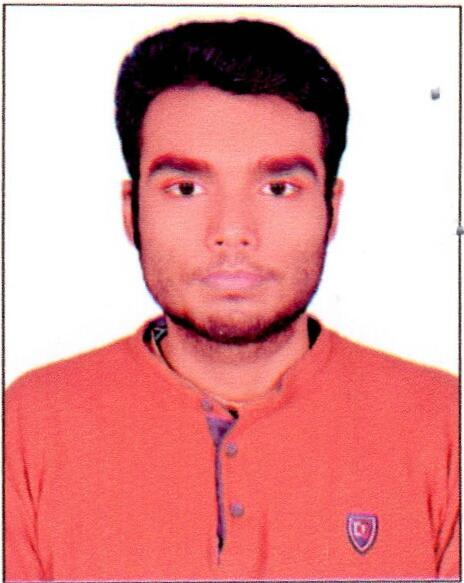

Sifur Taher Sarar
|

|
Education
-
Bachelor of Science in Computer Science and Engineering
American International University-Bangladesh
2023 - Present | CGPA: ...
-
Higher Secondary Certificate (HSC) in Science
Rajbari Government College, Rajbari
2020 - 2022 | GPA: 4.42
-
Secondary School Certificate (SSC) in Science
Rajbari Government High School, Rajbari
2018 - 2019 | CGPA: 4.89
|
Skills
- Programming Languages: JavaScript, Python, Java
- Web Development: HTML, CSS, React.js, Node.js
- Database Management: MySQL, MongoDB
- Version Control: Git, GitHub
- Problem Solving and Algorithm Design
|
Projects
-
Personal Portfolio Website
Developed a responsive portfolio website using HTML, CSS, and
JavaScript to showcase projects and skills.
-
E-commerce Website
Built a full-stack e-commerce application using React.js for the
frontend and Node.js with Express for the backend, integrating
MongoDB for data storage.
-
Mern Authentication System
Created a user authentication system using the MERN stack,
implementing JWT for secure login and registration functionality.
-
CRUD Task Manager
Developed a task management application with React.js and Node.js,
allowing users to create, read, update, and delete tasks with a
MongoDB database for storage.
|
Language Proficiency
- Bangla: Native
- English: Professional
- Japanese: N5
|
Interests
traveling | photography | Movies | Series | Reading
|
Personal Information
Name : Sifur Taher Sarar
Father's Name : Late Md. Afzal Hossain
Mother's Name : Sharmin Sultana Shagorika
Date of Birth : 30 November 2003
Gender : Male
Marital Status : Unmarried
Nationality : Bangladeshi
Religion : Islam
Pemanent Address : Rajbari Sadar, Rajbari Bangladesh
|
© Created By Sifur Taher Sarar
|